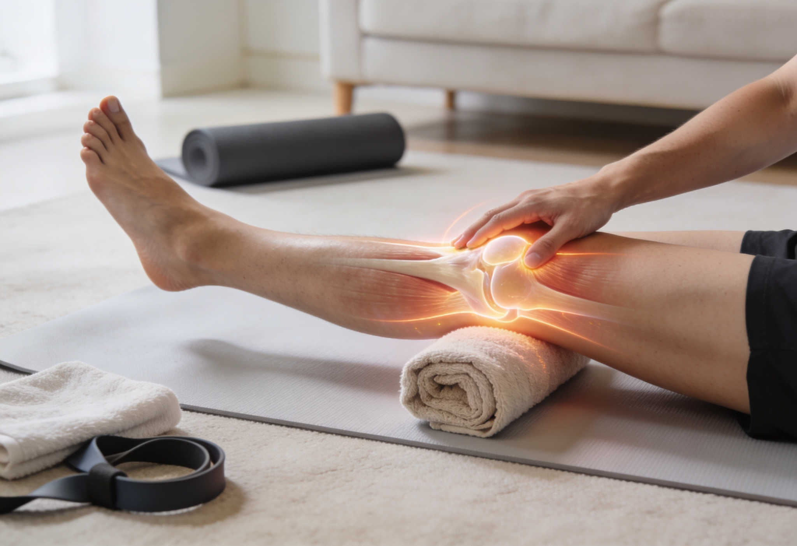
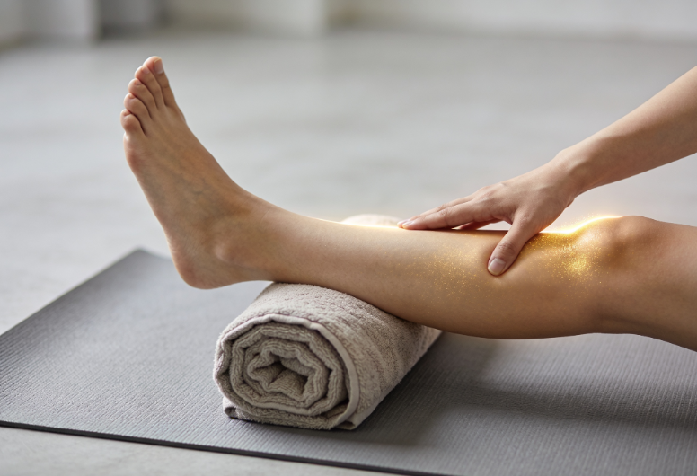
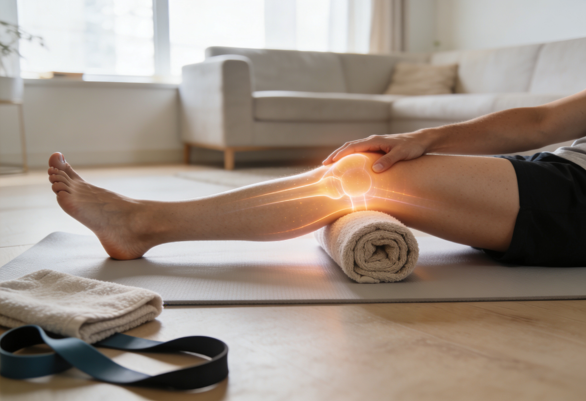
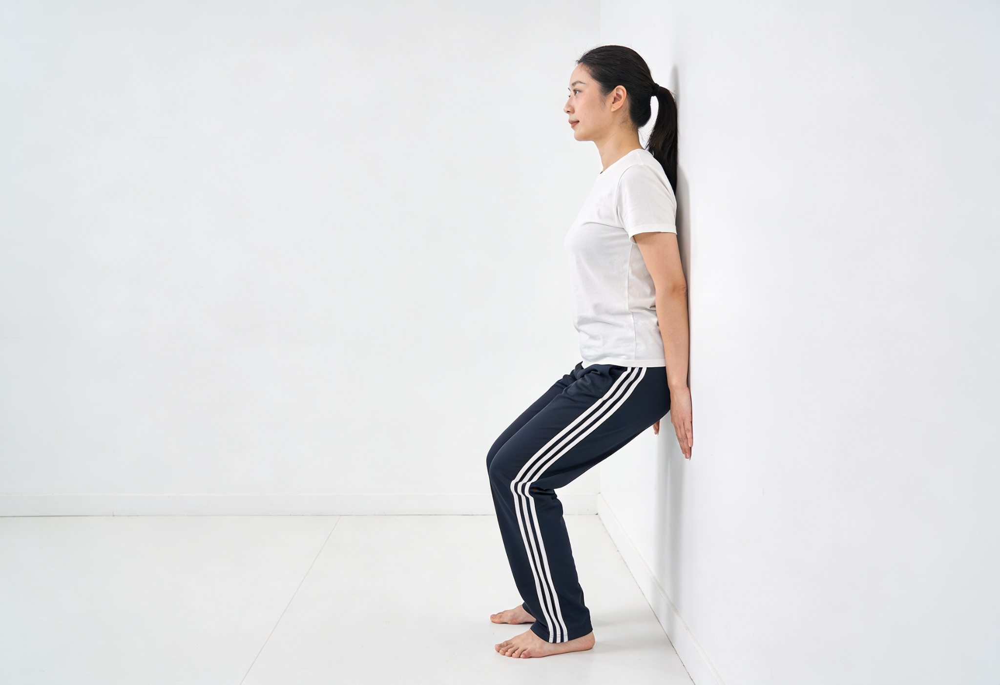
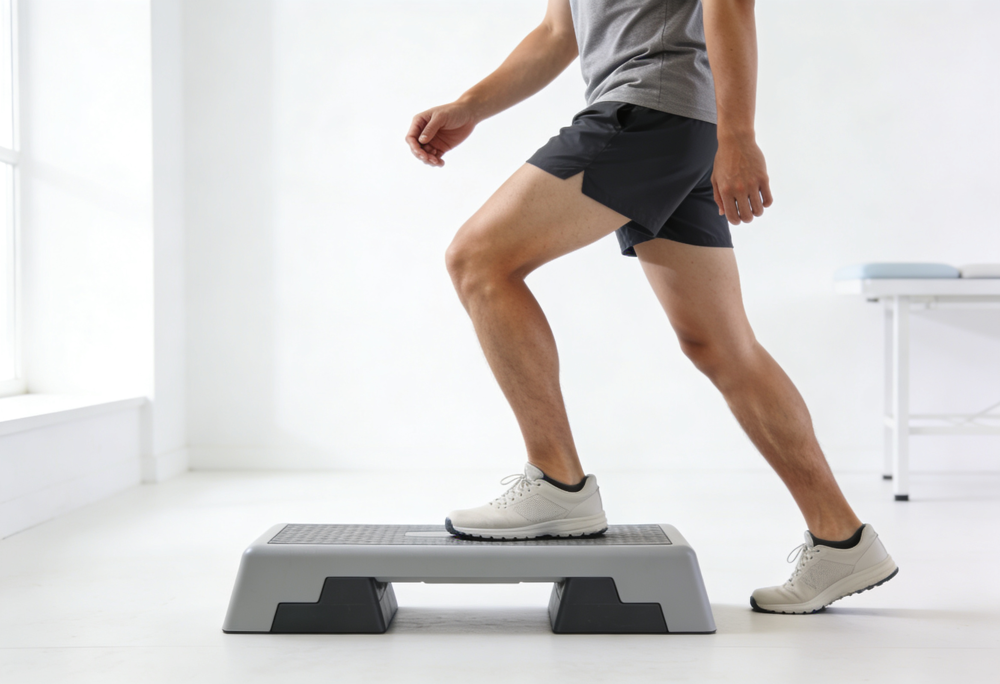
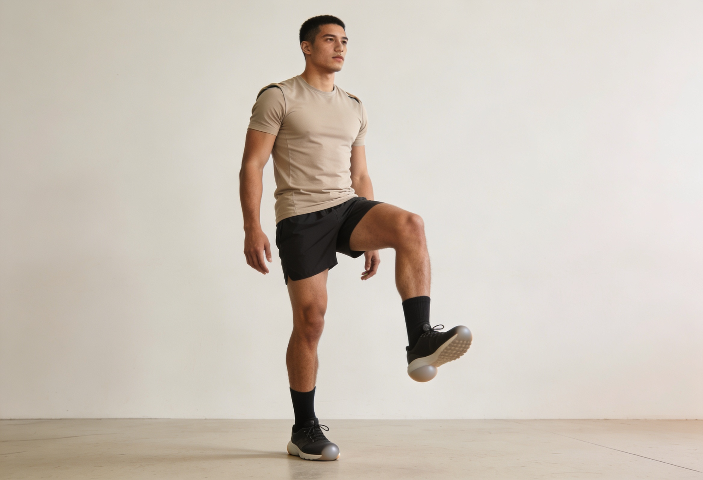

Physiotherapy Exercises for Knee Joint Pain: A Practical Guide from Pune’s Physiotherapists


18
May

Dr. Amol Kathar
MPT (Neuro), 3.5+ years clinical
experience in neurological rehabilitation
Physiotherapy Exercises for Knee Joint Pain: A Practical Guide from Pune’s Physiotherapists
Knee pain has a way of sneaking up on people. One morning you stand up from your chair and feel a sharp twinge. A few weeks later, climbing stairs becomes a small daily negotiation. Soon you start avoiding walks, skipping the gym, and saying no to weekend plans you used to love.
If that sounds familiar, you are not alone. Knee joint pain is one of the most common reasons people in Pune walk into a physiotherapy clinic, and the good news is that for the vast majority of cases, structured exercise is the single most effective long-term treatment. Not painkillers. Not rest. Not surgery. Carefully chosen, gradually progressed physiotherapy exercises.
This guide walks you through eight safe, evidence-based exercises that physiotherapists routinely prescribe for knee pain, along with how to do them, when to stop, and when it is time to call a professional. Whether your knee pain is from desk work, running, arthritis, or an old injury that never fully healed, the right movement plan can change how you feel within a few weeks.
Why Knee Pain Has Become So Common Among Pune Residents
A few patterns show up again and again in our clinics. Pune’s work culture leans toward long hours in front of a screen, often in chairs that were never designed for the human spine. Weekend warriors then try to compensate with intense runs along the riverside or trekking around Sahyadri, and the knees get caught in the middle.
Add in the city’s growing population of seniors who want to stay active, the rise of recreational sports like badminton and pickleball, and the fact that road and pavement conditions force a lot of impact onto our joints, and you have a perfect setup for knee trouble. The encouraging part is that almost all of this responds beautifully to physiotherapy when it is started early.
Common Causes of Knee Joint Pain
Before you start any exercise plan, it helps to understand what is likely driving your pain. The most frequent culprits we see include:
- Patellofemoral pain syndrome (runner’s knee): Pain around or behind the kneecap, often felt after sitting for long periods or going down stairs.
- Osteoarthritis: Gradual wear of the cartilage that cushions the joint. Common after age 45, but lifestyle factors matter more than age alone.
- Iliotibial (IT) band syndrome: Sharp pain on the outer side of the knee, especially in runners and cyclists.
- Ligament or meniscus strains: Often the result of a twist, a fall, or a sports injury. Pain plus instability is a key warning sign.
- Weakness in the surrounding muscles: Weak glutes, quads, or hip stabilizers force the knee to absorb stress it was never meant to carry.
A trained physiotherapist will identify which of these is driving your pain and tailor exercises accordingly. The exercises below are safe across most of these categories, but if you have a recent injury or significant swelling, get a clinical assessment before starting.
When You Should See a Physiotherapist Right Away
Home exercises are powerful, but some symptoms need professional eyes on them. Book an in-person appointment if you notice:
- Sudden, severe pain after a fall, twist, or sports injury
- Visible swelling that does not settle within 48 hours
- A sensation that your knee is locking, catching, or giving way
- Pain that wakes you up at night or persists at rest
- Inability to bear weight on the affected leg
- Redness, warmth, or fever alongside knee pain
These signs can point to ligament tears, meniscal injuries, or inflammatory conditions that benefit from targeted treatment rather than general exercise.
8 Safe Physiotherapy Exercises for Knee Joint Pain You Can Do at Home
Work through this routine three to five times a week. Each exercise should feel like effort, not sharp pain. A useful rule: discomfort up to about 3 out of 10 is acceptable, anything above that means stop and modify. Build up gradually, starting with the lower end of the recommended repetitions, and progress only when the current level feels easy.
1. Quadriceps Sets (Static Holds)
A gentle, low-impact way to switch on the thigh muscle that protects the kneecap. Excellent first exercise if your pain is irritable.
How to do it:
- Sit on the floor or a firm bed with your legs straight out in front.
- Place a small rolled towel under the back of your affected knee.
- Tighten the thigh muscle by pressing the back of your knee down into the towel.
- Hold for 5 seconds, relax for 2 seconds.
- Repeat 10 to 15 times. Do 2 to 3 sets.

2. Straight Leg Raises
Builds quadriceps strength without bending the painful knee. A staple in almost every knee rehab program.
How to do it:
- Lie on your back. Bend the unaffected knee with your foot flat on the floor.
- Keep the affected leg straight, toes pointed toward the ceiling.
- Tighten the thigh, then lift the straight leg to about the height of the opposite knee.
- Lower slowly over 3 seconds.
- Do 10 to 12 reps, 2 to 3 sets.

3. Heel Slides
Restores gentle bending range of motion. Especially useful if your knee feels stiff in the morning or after sitting.
How to do it:
- Lie on your back with both legs straight.
- Slowly slide the heel of the affected leg toward your buttock, bending the knee as far as comfortable.
- Hold for 3 seconds at the deepest comfortable position.
- Slide back to straight.
- Repeat 10 times for 2 sets.

4. Glute Bridges
Strong glutes take pressure off the knees. This is one of the most underrated exercises for people with chronic knee pain.
How to do it:
- Lie on your back, knees bent, feet flat on the floor about hip-width apart.
- Squeeze your glutes and lift your hips until your body forms a straight line from shoulders to knees.
- Hold for 3 to 5 seconds at the top.
- Lower slowly.
- Do 10 to 15 reps, 2 to 3 sets.

5. Wall-Supported Mini Squats
Loads the knee through a small, controlled range. Helps the joint relearn how to handle daily tasks like sitting and standing.
How to do it:
- Stand with your back against a wall, feet about a foot away from it, shoulder-width apart.
- Slowly slide down the wall until your knees are bent to about 30 to 45 degrees. Do not go past 90 degrees.
- Keep your knees in line with your toes, never collapsing inward.
- Hold for 5 seconds, then slide back up.
- Do 8 to 12 reps, 2 sets.

6. Step-Ups
A functional exercise that translates directly to climbing stairs without pain. Start small.
How to do it:
- Stand in front of a low step or a thick book, about 4 to 6 inches high.
- Step up slowly with your affected leg, bringing the other foot up to meet it.
- Step down with the unaffected leg first.
- Do 10 reps, 2 sets. Progress to a higher step only when this feels easy.

7. Hamstring Stretch (Seated)
Tight hamstrings pull on the knee joint and aggravate pain. A daily stretch eases that tension.
How to do it:
- Sit on the edge of a chair with one leg straight out, heel on the floor, toes pointing up.
- Keeping your back straight, lean forward from the hips until you feel a stretch in the back of the thigh.
- Hold for 20 to 30 seconds.
- Repeat 3 times per leg.

8. Calf Raises
Strengthens the calf muscles that support the lower leg and absorb shock through the knee.
How to do it:
- Stand behind a chair, holding it lightly for balance.
- Slowly rise up onto the balls of your feet.
- Pause at the top for 2 seconds.
- Lower under control over 3 seconds.
- Do 12 to 15 reps, 2 to 3 sets.

Tips to Get the Most Out of Your Home Exercises
A few habits separate the people who get lasting relief from those who stay stuck in pain cycles.
- Be consistent, not intense. Twenty minutes, five days a week, beats two hours once a week.
- Warm up first. A five-minute walk or gentle marching in place primes your joint.
- Track your progress. Note your pain on a 0 to 10 scale before and after each session. You will see patterns that guide your next steps.
- Strengthen the hips and core. The knee rarely fails on its own. Weakness above or below it usually plays a role.
- Mind your footwear. Worn-out shoes change how forces travel up the leg. Replace running shoes every 600 to 800 kilometers.
- Respect pain signals. Mild discomfort during exercise is normal. Sharp, sudden, or worsening pain is not. Stop and reassess.
Why a Personalised Plan Beats a Generic Routine
Online videos and printable charts have their place. They cannot, however, tell you whether your kneecap is tracking properly, whether your hips are doing their fair share, or which of the eight exercises above will fast-track your recovery and which might irritate your specific condition.
A physiotherapy assessment usually takes 45 to 60 minutes. Your therapist watches how you walk, tests the strength of muscles around the joint, checks how the ligaments are holding up, and reviews any imaging you have. From there, you get a tailored plan that progresses week by week rather than a fixed list of moves.
The difference shows up quickly. People who follow a guided program typically report meaningful pain reduction within four to six weeks, with stronger long-term outcomes than self-directed exercise alone.
How Apricot Care’s Physiotherapy Team Approaches Knee Joint Pain
At Apricot Care in Kharadi, our physiotherapists work with patients across every stage of knee trouble: early morning stiffness, post-surgical recovery, sports injuries, and chronic osteoarthritis. Every plan starts with a full assessment, not a template.
What that looks like in practice:
- Detailed clinical examination including gait analysis and joint range testing
- A graded exercise program that adjusts every two to three weeks based on your progress
- Manual therapy techniques to ease stiffness and improve joint mobility
- Education on posture, footwear, workspace setup, and daily habits that influence your knees
- Coordination with orthopedic specialists when surgery or imaging is needed
Our clinic in Kharadi is easy to reach from Viman Nagar, Wagholi, Kalyani Nagar, Magarpatta, and the rest of east Pune. Sessions are scheduled to fit around work, school, or caregiving so that consistency stays realistic.
Frequently Asked Questions
How long does physiotherapy take to
relieve knee pain?
Most people feel a noticeable reduction in pain within two to three weeks of
consistent treatment. Lasting improvement, including better strength and
stability, typically takes six to twelve weeks depending on the underlying
cause and your starting fitness.
Can I do these exercises if I have knee
osteoarthritis?
Yes, in most cases. Strengthening and range-of-motion work is one of the
most strongly recommended treatments for knee osteoarthritis in clinical
guidelines around the world. Start with lower repetitions, progress slowly,
and check in with a physiotherapist if anything flares up.
Should I use ice or heat for knee
pain?
Ice helps with acute swelling and pain after activity, usually for 15
minutes at a time. Heat tends to help with stiffness and chronic aches,
particularly in the morning or before exercise. Many people benefit from
heat before activity and ice afterward.
When should I stop a knee
exercise?
Stop if you feel sharp pain, a clicking that brings on discomfort, sudden
swelling, or instability. Mild muscle fatigue and a dull ache that settles
within an hour or so is normal and even helpful.
Do I need a doctor’s referral to start
physiotherapy in
Pune?
No, you can book a physiotherapy assessment directly. If your
physiotherapist suspects something that needs imaging or a specialist
opinion, they will refer you appropriately.
How often should I do these
exercises?
Aim for three to five sessions a week. Daily stretching is fine, but
strengthening exercises benefit from at least one rest day in between to let
the muscles recover and adapt.
Ready to Move Without Knee Pain?
A short, well-built routine, done consistently, will take you a remarkable distance. If you want that routine designed around your specific knee, your goals, and your schedule, our physiotherapy team in Kharadi is ready to help. Whether you are recovering from a recent injury, managing arthritis, or simply tired of the daily ache, you deserve a clear plan and steady progress.
Schedule Your Personalised Physiotherapy
Session Now
Call our Kharadi clinic or book online to reserve an assessment slot this
week. Your knees will thank you for it.
About
author
Dr. Amol Kathar is the Clinical Head and Neurophysiotherapist at Apricot Care,
Pune.
With 3.5 years of experience, he specializes in personalized rehabilitation for stroke, spinal cord injuries, and mobility training to help patients regain independence.
With 3.5 years of experience, he specializes in personalized rehabilitation for stroke, spinal cord injuries, and mobility training to help patients regain independence.